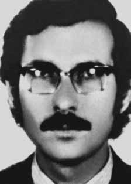

José
Júlio
de Araújo
CIRCUNSTÂNCIAS DA MORTE
José Júlio foi abordado por policiais da Equipe C do DOI-CODI, juntamente com sua companheira Valderês Nunes Fonseca, em 18 de agosto de 1972, em um bar no bairro da Vila Mariana, em São Paulo. De acordo com a versão oficial, teria tentado resistir à voz de prisão e entrado em luta corporal, acabando ferido por uma coronhada na cabeça desferida por um dos agentes policiais. O Dossiê Ditadura: Mortos e Desaparecidos Políticos no Brasil (1964-1985), menciona que o documento “Aos Bispos do Brasil”, de 1973, encontrado nos arquivos do DOPS/SP narra que, após a abordagem, José Júlio de Araújo teria sido violentamente torturado por diversos agentes e, em seguida, assassinado: Foi preso no dia 18/8/1972 na rua Domingos de Morais, em São Paulo, por uma equipe de policiais comandada pelo “Dr. Ney”. Na ocasião da prisão aplicaramlhe violenta coronhada na cabeça que produziu um sério ferimento. Foi levado para o DOI, na rua Tutóia, 721, onde foi violentamente torturado pelos policiais: escrivão de polícia Gaeta, capitão do Exército Dalmo Lúcio Cyrillo, “Dr. Ney”, “Zé Bonitinho”, “Dr. Jorge” e outros. A sala de torturas, no final da tarde do dia 18, estava totalmente suja de sangue. Às 17 horas desse dia, José Júlio foi retirado do DOI e assassinado. A versão oficial publicada no Diário da Tarde, de 22 de agosto de 1972, com o título “Terrorista Volta de Cuba para Morrer em São Paulo”, tem o mesmo conteúdo do relatório dos Ministérios da Aeronáutica e da Marinha, encaminhados ao ministro da Justiça Maurício Corrêa em 1993: Por volta das 14:30 horas do dia 18 último […] foi notada, pelos policiais de serviço no local, a presença de um homem em atitude suspeita e, presumivelmente, armado. Após ter se afastado do local, o homem foi seguido pelos policias até a rua Cubatão, quando foi abordado. Ao ser interpelado reagiu, tentando sacar uma arma. […] Imediatamente foi ouvido, tendo declarado chamar-se José Júlio de Araújo […]. José Júlio de Araújo declarou ainda que, naquele mesmo dia, às 17:30 horas iria encontrar-se com um companheiro da ALN, na rua Fradique Coutinho, esquina com rua Teodoro Sampaio. Conduzido ao local na hora prevista do encontro, o terrorista lançouse sobre um policial que o escoltava, arrebatando-lhe a arma e saindo correndo pela rua Teodoro Sampaio. Os demais agentes que o escoltavam passaram a persegui-lo, ocasião em que travou-se violento tiroteio […]. A 100 metros, o terrorista foi ferido mortalmente, caindo ao solo. Ao ser levado para o hospital, foi constatado que o mesmo já estava morto, sendo, então, levado para o Instituto Médico-Legal. O laudo necroscópico, assinado pelos médicos legistas Isaac Abramovitc e José Henrique da Fonseca, alinha-se à falsa versão e atesta que José Júlio foi atingido por quatro tiros: um no lábio, um no ombro direito, outro na cabeça e um no peito. O laudo contradiz o exame de ossada realizado em 1º de outubro de 1991 pelos legistas do IML de Minas Gerais, José Frank Wiedreker Marotta e Geraldo Pianetti Filho, que afirmaram: “Com base na localização dos orifícios “E” (na região frontal direita) e “S” (na occipital à direita), infere-se que a trajetória descrita, pelo instrumento pérfurocontundente que os produziu, foi de frente para trás, ligeiramente da direita para a esquerda e ligeiramente de cima para baixo”. Os tiros disparados de frente para trás contradizem a versão oficial, que apresenta a versão de tiros desferidos em perseguição. O depoimento de Valderês, companheira de José Júlio, tomado em 16 de janeiro de 1996 para o processo da CEMDP, esclarece que ambos foram presos e interrogados em salas separadas. Conforme relato de Valderês: A equipe C do DOI-CODI que nos prendeu (recordo-me que dela participavam o capitão Átila, Oberdan e um policial civil com codinome Mangabeira […] durante todo o tempo sob o comando do major Carlos Alberto Brilhante Ustra) dividiu-se em duas, uma das quais, menor, ocupava-se de mim. Na primeira parte do meu interrogatório, meus torturadores visaram unicamente obter dados sobre José Júlio, não se importando em saber nada de minha pessoa, a não ser meu endereço. De vez em quando, abandonavam a sala onde eu estava e desciam uma escada. Ao subir, voltavam querendo mais dados sobre José Júlio, sendo que suas perguntas pareciam visar a complementar dados sobre ele. Os únicos dados que eu posso afirmar que eles possuíam sobre José Júlio é que ele havia chegado do exterior e que havia marcado um encontro na avenida Jabaquara. Este interrogatório prosseguiu desse modo ininterruptamente. Outros elementos contundentes contradizem a versão oficial de morte, pois além do casal ter sido preso junto, Valderês afirma que: […] na madrugada do dia 19 de agosto fui transferida para uma sala onde se encontravam todas as roupas com as quais José Júlio havia sido preso, algumas peças rasgadas, outras ensanguentadas e, a partir deste momento, começou meu interrogatório propriamente dito: nada mais a respeito de José Júlio me foi perguntado. José Júlio foi enterrado como indigente no cemitério Dom Bosco, em Perus, na cidade de São Paulo, em agosto de 1972. No ano de 1975 seus restos mortais foram exumados e levados para Belo Horizonte por seu irmão Márcio que, convicto da identificação do irmão, escondeu a ossada no sótão da casa onde moravam e informou aos pais que havia feito um novo enterro no cemitério da Lapa, em São Paulo. Em 1976, acometido de depressão, Márcio suicidou-se. Depois da sua morte, a mãe descobriu os ossos de José Júlio no sótão da casa e decidiu manter o segredo, já que não dispunha de documento ou outros meios que pudessem comprovar a identificação, com vistas a oficializar um sepultamento definitivo. Anos depois, a ossada foi descoberta por acaso, quando um encanador foi contratado pela família para fazer reparos no sótão da casa. Ao descobrir, denunciou o fato ao delegado Miguel Dias Campos, que indiciou a mãe e a irmã de José Júlio por ocultação de cadáver. Submetidos a exame pericial, pode-se constatar que os ossos eram mesmo de José Júlio de Araújo, o que também contribuiu para refutar a versão oficial divulgada em 1972, tendo em vista que os legistas identificaram uma perfuração no crânio decorrente de projétil de arma de fogo. O inquérito de ocultação de cadáver contra a família foi encerrado e José Júlio de Araújo foi sepultado em 6 de novembro de 1993, no cemitério Parque da Colina, com a presença de familiares, amigos, antigos companheiros de militância e representantes de movimentos de Direitos Humanos. Na CEMDP, o processo nº 032/96 teve Nilmário Miranda como relator e foi deferido por unanimidade em 8 de fevereiro de 1996. Em sua homenagem, a cidade de Belo Horizonte deu o seu nome a uma rua no bairro das Indústrias.
José Júlio was approached by police officers from Team C of DOI-CODI, together with his companion Valderês Nunes Fonseca, on August 18, 1972, in a bar in the Vila Mariana neighborhood, in São Paulo. According to the official version, he tried to resist the arrest and got into a fight, ending up injured by a gun to the head from one of the police officers. The Dossier Ditadura: Mortos e Desaparecidos Políticos no Brasil (1964-1985), mentions that the document “To the Bishops of Brazil”, from 1973, found in the DOPS/SP archives narrates that, after the approach, José Júlio de Araújo was violently tortured by several agents and then murdered: He was arrested on 8/18/1972 on Rua Domingos de Morais, in São Paulo, by a team of police officers led by “Dr. Ney”. At the time of his arrest, he was violently hit in the head with a gun, causing a serious injury. He was taken to the DOI, on Rua Tutóia, 721, where he was violently tortured by the police: police clerk Gaeta, Army captain Dalmo Lúcio Cyrillo, “Dr. Ney”, “Zé Bonitinho”, “Dr. Jorge” and others. The torture room, in the late afternoon of the 18th, was completely covered in blood. At 5 pm that day, José Júlio was removed from the DOI and murdered. The official version published in the Diário da Tarde, on August 22, 1972, with the title “Terrorist Returns from Cuba to Die in São Paulo”, has the same content as the report from the Ministries of Aeronautics and the Navy, sent to the Minister of Justice Maurício Corrêa in 1993: Around 2:30 pm on the 18th [...] the police on duty at the scene noticed the presence of a man in an attitude suspicious and, presumably, armed. After leaving the scene, the man was followed by the police to Cubatão Street, when he was approached. When questioned, he reacted, trying to pull out a weapon. […] He was immediately heard, declaring his name to be José Júlio de Araújo […]. José Júlio de Araújo also declared that, that same day, at 5:30 pm he would meet with a comrade from the ALN, on Rua Fradique Coutinho, on the corner of Rua Teodoro Sampaio. Driving to the location at the scheduled meeting time, the terrorist attacked a police officer who was escorting him, snatching his weapon and running down Teodoro Sampaio Street. The other agents who were escorting him began to pursue him, when a violent shootout ensued […]. 100 meters away, the terrorist was fatally injured, falling to the ground. When taken to the hospital, it was found that he was already dead, and he was then taken to the Medical-Legal Institute. The autopsy report, signed by coroners Isaac Abramovitc and José Henrique da Fonseca, aligns with the false version and attests that José Júlio was hit by four shots: one in the lip, one in the right shoulder, another in the head and one in the chest. The report contradicts the bone examination carried out on October 1, 1991 by the Minas Gerais IML coroners, José Frank Wiedreker Marotta and Geraldo Pianetti Filho, who stated: “Based on the location of the holes “E” (in the right frontal region) and “S” (in the right occiput), it is inferred that the trajectory described, by the blunt instrument that produced them, was from front to back, slightly from right to left and slightly from top to bottom.” The shots fired from front to back contradict the official version, which presents the version of shots fired in pursuit. The testimony of Valderês, José Júlio's companion, taken on January 16, 1996 for the CEMDP process, clarifies that both were arrested and interrogated in separate rooms. According to Valderês's report: The DOI-CODI C team that arrested us (I remember that Captain Átila, Oberdan and a civil police officer with the code name Mangabeira […] all the time under the command of Major Carlos Alberto Brilhante Ustra participated) was divided into two, one of which, a smaller one, took care of me. In the first part of my interrogation, my torturers aimed solely to obtain information about José Júlio, not caring about knowing anything about me other than my address. Every now and then, they would leave the room where I was and go down a staircase. When they went up, they came back wanting more information about José Júlio, and their questions seemed to be aimed at supplementing information about him. The only information I can say they had about José Júlio is that he had arrived from abroad and that he had arranged a meeting on Avenida Jabaquara. This interrogation continued in this manner without interruption. Other compelling elements contradict the official version of death, as in addition to the couple being arrested together, Valderês states that: [...] in the early hours of August 19th I was transferred to a room where all the clothes with which José Júlio had been arrested were found, some torn, others bloody and, from that moment on, my actual interrogation began: nothing more about José Júlio was asked of me. José Júlio was buried as a pauper in the Dom Bosco cemetery, in Perus, in the city of São Paulo, in August 1972. In 1975, his remains were exhumed and taken to Belo Horizonte by his brother Márcio who, convinced of his brother's identification, hid the bones in the attic of the house where they lived and informed his parents that he had made a new burial in the Lapa cemetery, in São Paulo. In 1976, suffering from depression, Márcio committed suicide. After his death, the mother discovered José Júlio's bones in the attic of the house and decided to keep the secret, as she did not have any documents or other means that could prove the identification, with a view to officializing a definitive burial. Years later, the bones were discovered by chance, when a plumber was hired by the family to carry out repairs in the attic of the house. Upon finding out, he reported the incident to police chief Miguel Dias Campos, who indicted José Júlio's mother and sister for hiding a corpse. Subjected to expert examination, it was confirmed that the bones were indeed those of José Júlio de Araújo, which also contributed to refuting the official version published in 1972, considering that the coroners identified a perforation in the skull resulting from a firearm projectile. The body concealment investigation against the family was closed and José Júlio de Araújo was buried on November 6, 1993, in the Parque da Colina cemetery, in the presence of family, friends, former militant companions and representatives of Human Rights movements. At CEMDP, process No. 032/96 had Nilmário Miranda as rapporteur and was unanimously approved on February 8, 1996. In his honor, the city of Belo Horizonte named a street in the Indústrias neighborhood after him.
José Júlio fue abordado por policías del Equipo C del DOI-CODI, junto con su compañero Valderês Nunes Fonseca, el 18 de agosto de 1972, en un bar del barrio de Vila Mariana, en São Paulo. Según la versión oficial, intentó resistirse al arresto y se peleó, terminando herido por un arma de fuego en la cabeza propinada por uno de los policías. El Dossier Ditadura: Mortos e Desaparecidos Políticos no Brasil (1964-1985), menciona que el documento “A los Obispos de Brasil”, de 1973, encontrado en los archivos del DOPS/SP narra que, luego del acercamiento, José Júlio de Araújo fue violentamente torturado por varios agentes y luego asesinado: Fue detenido el 18/08/1972 en la Rua Domingos de Morais, en São Paulo, por un equipo de policías liderados por el “Dr. Ney”. En el momento de su detención, fue golpeado violentamente en la cabeza con un arma de fuego, provocándole una lesión grave. Fue llevado al DOI, en Rua Tutóia, 721, donde fue violentamente torturado por los policías: el funcionario policial Gaeta, el capitán del ejército Dalmo Lúcio Cyrillo, el “Dr. Ney”, “Zé Bonitinho”, “Dr. Jorge” y otros. La sala de torturas, a última hora de la tarde del día 18, estaba completamente cubierta de sangre. A las 5 de la tarde de ese día, José Júlio fue retirado del DOI y asesinado. La versión oficial publicada en el Diário da Tarde, el 22 de agosto de 1972, con el título “Terrorista regresa de Cuba para morir en São Paulo”, tiene el mismo contenido que el informe de los Ministerios de Aeronáutica y de Marina, enviado al Ministro de Justicia Maurício Corrêa en 1993: Hacia las 14,30 horas del día 18 [...] los policías de turno en el lugar notaron la presencia de un hombre en actitud sospechosa y, presumiblemente, armado. Después de abandonar el lugar, el hombre fue seguido por la policía hasta la calle Cubatão, cuando fue abordado. Al ser interrogado, reaccionó intentando sacar un arma. […] Inmediatamente fue oído, declarando llamarse José Júlio de Araújo […]. José Júlio de Araújo también declaró que, ese mismo día, a las 17.30 horas se reuniría con un compañero de la ALN, en la calle Fradique Coutinho, esquina con la calle Teodoro Sampaio. Mientras se dirigía al lugar a la hora prevista para la reunión, el terrorista atacó a un policía que lo escoltaba, le arrebató el arma y salió corriendo por la calle Teodoro Sampaio. Los demás agentes que lo escoltaban comenzaron a perseguirlo, cuando se produjo un violento tiroteo […]. A 100 metros de distancia, el terrorista resultó herido de muerte al caer al suelo. Al ser trasladado al hospital se constató que ya estaba muerto, por lo que fue trasladado al Instituto Médico Legal. El informe de la autopsia, firmado por los forenses Isaac Abramovitc y José Henrique da Fonseca, coincide con la versión falsa y acredita que José Júlio recibió cuatro disparos: uno en el labio, uno en el hombro derecho, otro en la cabeza y uno en el pecho. El informe contradice el examen óseo realizado el 1 de octubre de 1991 por los médicos forenses del IML de Minas Gerais, José Frank Wiedreker Marotta y Geraldo Pianetti Filho, quienes afirmaron: “A partir de la ubicación de los orificios “E” (en la región frontal derecha) y “S” (en el occipucio derecho), se infiere que la trayectoria descrita, por el instrumento contundente que los produjo, fue de adelante hacia atrás, ligeramente de derecha a izquierda y ligeramente de arriba a abajo”. Los disparos realizados de adelante hacia atrás contradicen la versión oficial, que presenta la versión de disparos realizados en persecución. El testimonio de Valderês, compañero de José Júlio, tomado el 16 de enero de 1996 para el proceso del CEMDP, aclara que ambos fueron detenidos e interrogados en cuartos separados. Según el relato de Valderês: El equipo DOI-CODI C que nos arrestó (recuerdo que participaban el capitán Átila, Oberdan y un policía civil de nombre clave Mangabeira […] todo el tiempo bajo el mando del mayor Carlos Alberto Brilhante Ustra) se dividió en dos, uno de los cuales, más pequeño, se hizo cargo de mí. En la primera parte de mi interrogatorio, mis torturadores tuvieron como único objetivo obtener información sobre José Júlio, sin importarles saber nada de mí más que mi dirección. De vez en cuando salían de la habitación donde yo estaba y bajaban una escalera. Cuando subieron, regresaron queriendo más información sobre José Júlio, y sus preguntas parecían encaminadas a complementar información sobre él. La única información que puedo decir que tenían sobre José Júlio es que había llegado del exterior y que había concertado un encuentro en la Avenida Jabaquara. Este interrogatorio continuó de esta manera sin interrupción. Otros elementos contundentes contradicen la versión oficial de la muerte, pues además de que la pareja fue arrestada junta, Valderês afirma que: [...] en la madrugada del 19 de agosto fui trasladado a una habitación donde fueron encontradas todas las ropas con las que José Júlio había sido detenido, algunas rotas, otras ensangrentadas y, a partir de ese momento, comenzó mi verdadero interrogatorio: no me preguntaron nada más sobre José Júlio. José Júlio fue enterrado como indigente en el cementerio Dom Bosco, en Perus, en la ciudad de São Paulo, en agosto de 1972. En 1975, sus restos fueron exhumados y llevados a Belo Horizonte por su hermano Márcio quien, convencido de la identificación de su hermano, escondió los huesos en el ático de la casa donde vivían e informó a sus padres que había hecho un nuevo entierro en el cementerio de Lapa, en São Paulo. En 1976, aquejado de depresión, Márcio se suicidó. Luego de su muerte, la madre descubrió los huesos de José Júlio en el ático de la casa y decidió guardar el secreto, al no contar con ningún documento u otro medio que pudiera acreditar la identificación, con miras a oficializar un entierro definitivo. Años más tarde, los huesos fueron descubiertos por casualidad, cuando la familia contrató a un plomero para realizar reparaciones en el ático de la casa. Al enterarse, denunció el hecho al jefe policial Miguel Dias Campos, quien acusó a la madre y a la hermana de José Júlio de ocultar un cadáver. Sometido a peritaje, se confirmó que los huesos eran efectivamente los de José Júlio de Araújo, lo que también contribuyó a refutar la versión oficial publicada en 1972, considerando que los forenses identificaron una perforación en el cráneo resultante de un proyectil de arma de fuego. La investigación por ocultación del cuerpo contra la familia fue cerrada y José Júlio de Araújo fue enterrado el 6 de noviembre de 1993, en el cementerio Parque da Colina, en presencia de familiares, amigos, ex compañeros de militancia y representantes de movimientos de Derechos Humanos. En el CEMDP, el proceso n.° 032/96 tuvo como relator a Nilmário Miranda y fue aprobado por unanimidad el 8 de febrero de 1996. En su honor, la ciudad de Belo Horizonte nombró en su honor una calle del barrio Industrias.